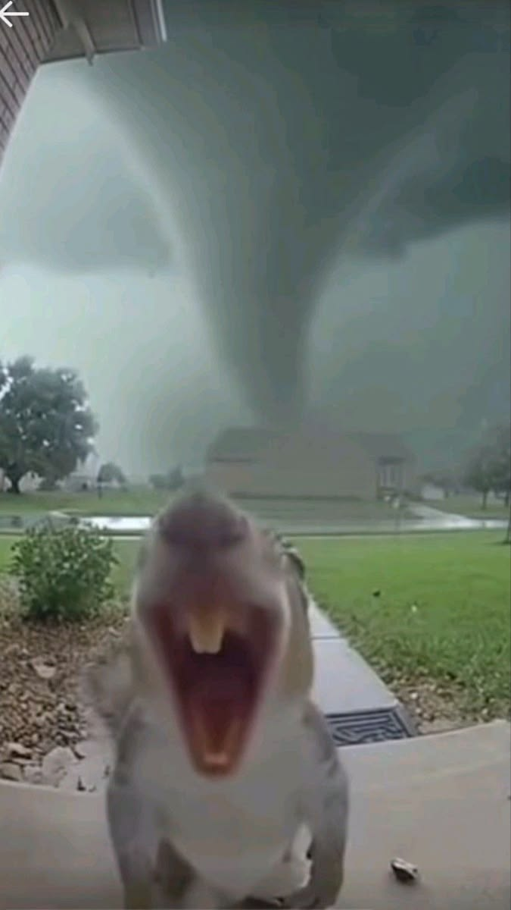
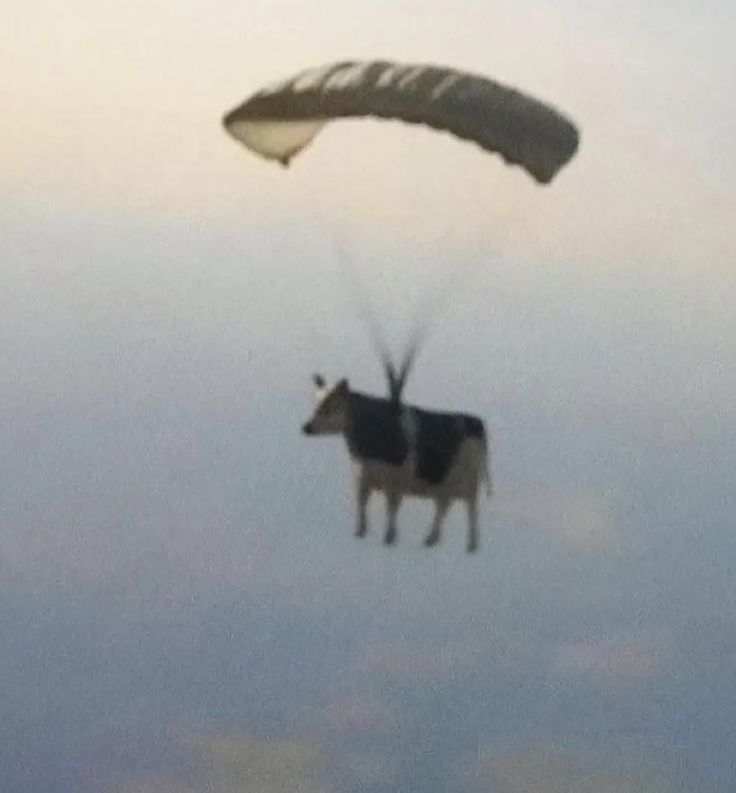

here you can grab any picture you need, from cool profile pics to funny backgrounds to maybe random images you just want to save.EVERY SINGLE IMAGE on this website can be a posible image for YOUR use. These images will work great for your backgrounds. There are options for phones and desktops.
DISCLAIMER: I do not own any of the images on this website and all the credit should go to the original owners/creators of these images.
some options you have are:


many different profile pictres, funny wallpapers, backgrounds for moble and pc, and funny images like This